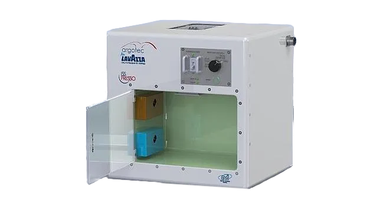

¡Lo consegiste! Ahora desembarcas y te dispones a hacerte un café, pero las cafeteras espaciales son muy raras así que tienes dos opciones:
La máquina con muchas luces, que no para de pitar y que suena como una cafetera La máquina que tiene un botón y una jarra con agua, pero que suena como si hubiese una discoteca dentro 